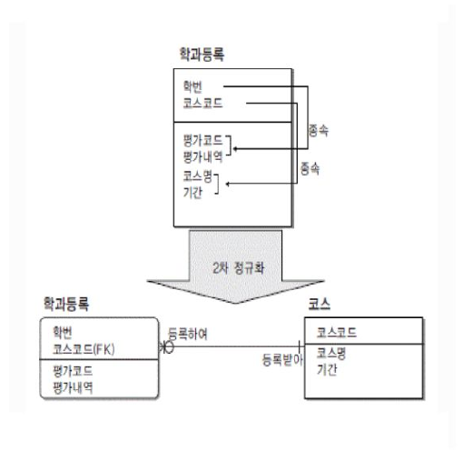
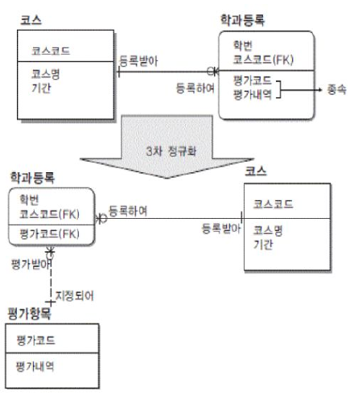

2026학년도 2학기 실전웹서비스개발
실전 웹서비스개발 – 7주차
데이터베이스 설계와 PostgreSQL · Supabase
LECTURE 07
학습 목표
데이터베이스 설계에서 클라우드 구축까지
- 데이터베이스 - 관계형 데이터와 설계 절차 이해
- 엔티티·관계·키·무결성의 역할
- PostgreSQL - 관계형 데이터베이스와 SQL 이해
- 테이블 정의와 데이터 조작의 기본 구조
- Supabase - 관리형 PostgreSQL 구축 흐름 이해
- 테이블 생성·조회와 데이터 접근 제어
01
데이터베이스 기초
데이터베이스
공유 데이터를 통합 관리하는 데이터의 집합
- 데이터베이스 - 공유되어 사용될 목적으로 통합 관리되는 데이터의 집합
- 여러 사용자가 공유하고 접근 가능
- 무결성 및 보안이 중요
- 데이터 관리 - 서비스 운영에 필요한 데이터의 지속적인 관리
- 정확성·보안·접근성을 함께 고려

DBMS
데이터베이스 생성과 관리를 지원하는 시스템
- DBMS - 데이터베이스를 만들고, 저장 및 관리할 수 있는 기능들을 제공하는 응용 프로그램
- 여러 사용자의 데이터 접근과 변경을 관리
- 역할 - 응용 프로그램과 저장된 데이터 사이의 관리 계층
- 권한·제약·복구 기능으로 데이터 관리 지원
데이터베이스 역사
- 1960s - 시작: 네트워크/계층형, Charles Bachman
- 기업 전산에서 데이터 독립성 요구가 커지며 DBMS 개념이 등장.
- 1970 - 관계형 이론: E. F. Codd
- 데이터를 엔티티와 관계로 표현
- 관계대수/관계해석 기반의 정형 질의(Query) 개념 정립.
- 정규화로 중복 최소화, 논리·물리적 데이터 독립성 강화.
- 1970s - System R & 핵심 기술 완성
- IBM System R에서 SQL 최초 구현
- RDBMS 필수 아키텍처가 표준화.
- 1970s~1990s - 오픈·상용 생태 확장
- ANSI SQL 표준화
- 클라이언트/서버 아키텍처 보급
- 1990s - Oracle 상용 선도: Larry Ellison/Bob Miner
- 대규모 상용 워크로드에서 확장성·고가용성으로 RDBMS가 기업 표준으로 자리잡음.
- 1995~ - 오픈소스 부상: MySQL + InnoDB, PostgreSQL
- LAMP(Linux + Apache + MySQL + PHP) 스택과 함께 대중화
- 2000s - 웹·빅데이터: NoSQL 등장
- 웹 규모 확장성 요구로 NoSQL 확산
- RDBMS는 여전히 코어 시스템으로 사용

데이터베이스 유형
- 관계형 데이터베이스(RDBMS) - 데이터를 테이블 형태로 구조화하여 저장하고, 각 테이블 간에 관계를 맺어 데이터를 관리
- 데이터의 정합성을 유지하고, SQL이라는 표준 쿼리 언어를 사용하여 복잡한 데이터 조작 및 검색이 가능
- 데이터의 구조 변경이 어렵고, 대규모의 비정형 데이터 처리에는 비효율적
- 주요 RDBMS : Oracle, MySQL, PostgreSQL, MariaDB
- 비관계형 데이터베이스(NoSQL DBMS) - 유연한 형태로 비정형 데이터를 저장
- 대규모의 분산 환경에서 뛰어난 확장성을 가지며, 유연한 데이터 모델링이 가능
- 복잡한 쿼리나 트랜잭션 처리가 어려울 수 있음
- 유형별
- 문서형(Document) DBMS: JSON과 같은 문서 형태로 데이터를 저장, MongoDB
- 키-값형(Key-Value) DBMS: 키와 값의 형태로 데이터를 저장하여 빠른 검색이 가능, Redis
- 그래프형(Graph) DBMS: 노드와 엣지 형태로 복잡한 관계를 표현하고 저장
2026년 10월 데이터베이스 트렌드


데이터베이스 관련 직군
- 데이터 모델러 - 데이터 구조, 관계, 제약 조건을 설계
- 데이터 아키텍트 - DBMS 선택 및 전체 데이터 아키텍처를 책임
- 데이터 엔지니어 - 데이터 파이프라인과 데이터 웨어하우스를 설계하고 구축
- DBA(Database Administrator) - 데이터베이스 운영, 모니터링, 백업, 보안 및 튜닝을 담당

02
데이터베이스 설계
데이터베이스 설계
서비스 요구사항을 데이터 구조로 변환
- 설계(Database Design) - 서비스 요구사항을 저장할 데이터와 관계로 바꾸는 작업
- 필요한 데이터와 데이터 사이의 관계를 식별
- 목표 - 정확성·성능·확장성·개발 속도
- 정확성: 잘못된 데이터·불필요한 중복 방지
- 성능: 조회·동시 처리 효율과 비용
- 확장성: 데이터·트래픽 증가에 대응
- 개발 속도: 스키마(Schema)·마이그레이션(Migration)으로 변경 대응
사용자가 식당 정보를 제보하고, 승인된 제보로 맛집 등록
| 요구 | 데이터로 표현할 내용 |
|---|---|
| 제보 작성자 | 사용자와 제보의 연결 |
| 맛집 등록 내용 | 식당 정보와 출처 제보 |

데이터베이스 설계 절차
개념적 설계에서 물리적 설계까지
- 설계 흐름 - 개념적 설계 → 논리적 설계 → 물리적 설계
- 요구사항을 개념으로 표현하고 구현 가능한 구조로 구체화
- 반복 - 요구사항과 사용 방식에 따른 설계 검토
- 각 단계의 결정이 다른 단계에 영향을 줄 수 있음
| 설계 단계 | 산출물의 예 |
|---|---|
| 개념적 설계 | 사용자 — 작성 — 제보 |
| 논리적 설계 | 사용자·제보 테이블과 각 열 |
| 물리적 설계 | 데이터 저장 위치와 조회 접근 경로 |

개념적 설계
서비스의 대상을 데이터 개념으로 표현
- 개념적 설계(Conceptual Design) - 서비스의 요구를 데이터 세계의 개념(사물·행위)으로 표현
- 구현 방법보다 서비스의 의미와 업무 규칙에 집중
- FoodMap 사례 - 사용자·제보·맛집과 그 관계 식별
- 제보 승인에 따른 맛집 등록이라는 업무 규칙 표현
사용자가 식당을 제보하고, 승인된 제보로 맛집을 등록하는 서비스
엔티티
저장할 대상의 종류
- 엔티티(Entity) - 저장할 대상의 종류
- 사용자·식당·주문 등이 엔티티의 예
- 각 인스턴스(Instance)는 해당 대상의 개별 사례
- FoodMap 사례 - 사용자·식당·제보
- 하나의 식당은 식당 엔티티의 한 인스턴스
아주식당
캠퍼스분식
속성
엔티티를 설명하는 값의 항목
- 속성(Attribute) - 엔티티를 설명하는 값의 항목
- 이름·전화번호 등이 속성의 예
- 각 인스턴스는 속성에 해당하는 값을 가짐
- 도메인(Domain) - 속성이 가질 수 있는 합법적 값의 집합과 단위·형식
- 예: 평점 1~5 정수
| 속성 | 값 |
|---|---|
| 이름 | 아주식당 |
| 전화번호 | 031-000-0000 |
| 평점 | 4 |
| 값 | 판정 |
|---|---|
| 4 | 허용: 범위 안의 정수 |
| 6 | 거부: 범위 초과 |
개념 예제의 범위 · 실제 실습 평점은 소수 허용
관계
엔티티 사이의 연관성
- 관계(Relationship) - 엔티티 간의 연관성·연결
- 관계의 이름은 서비스에서 두 대상이 맺는 역할 표현
- FoodMap 사례 - 사용자가 제보를 작성
- 하나의 사용자가 여러 제보와 연결될 수 있음
관계 이름 “작성”은 사용자와 제보가 맺는 업무 의미
카디널리티
관계에 참여할 수 있는 인스턴스의 개수
- 카디널리티(Cardinality) - 한쪽 엔티티가 다른 쪽과 맺을 수 있는 개수 규칙
- 1:1·1:N·N:M 관계로 표현
- 참여 제약(Participation Constraint) - 관계에 반드시 참여해야 하는지 또는 해도 되고 안 해도 되는지 결정하는 규칙
- 필수 참여(Mandatory Participation)와 선택 참여(Optional Participation)를 구분
| 대상 | 연결된 대상 |
|---|---|
| 사용자 민수 | 제보 101·102 → 2건 |
| 사용자 지수 | 제보 없음 → 0건 허용 |
| 제보 101 | 작성자 민수 → 정확히 1명 |
1:1 제보–맛집 · 1:N 사용자–제보 · N:M 사용자–관심 맛집


논리적 설계
개념 모델을 데이터 구조와 규칙으로 변환
- 논리적 설계(Logical Design) - DBMS가 곧바로 이해·변환할 수 있는 논리 데이터 스키마를 만드는 작업
- 엔티티와 속성을 테이블(Table)과 열(Column)로 표현
- 스키마(Schema) - 데이터 구조와 규칙의 설계서
- 테이블·열·자료형·키·제약조건으로 구성
이름 · 전화번호
name · phone
| name | phone |
|---|---|
| 아주식당 | 031-000-0000 |
| 캠퍼스분식 | 031-000-0001 |
엔티티는 테이블로, 속성은 열로 표현

기본 키
각 행을 유일하게 구별하는 식별자
- 기본 키(Primary Key, PK) - 테이블의 각 행(Row)을 식별하는 열 또는 열의 조합
- 값은 중복될 수 없으며 NULL을 허용하지 않음
- 식별 - 식당 이름처럼 바뀌거나 중복될 수 있는 값과 구분
- 여러 테이블이 동일한 대상을 참조하는 기준
| id | name |
|---|---|
| 11 | 아주식당 |
| 12 | 캠퍼스분식 |
| 13 | 아주식당 |
| 입력 | 결과 |
|---|---|
| id = 11 | 거부: 기존 id와 중복 |
| id = NULL | 거부: 식별자 없음 |
이름이 같은 두 식당도 서로 다른 id로 식별
외래 키
같은 테이블 또는 다른 테이블의 행을 참조하는 관계
- 외래 키(Foreign Key, FK) - 같은 테이블 또는 다른 테이블의 지정된 키를 참조하는 열 또는 열의 조합
- 참조 값이 대상 테이블에 존재하도록 관계를 검증
- 참조 대상 - 기본 키 또는 참조 가능한 고유한 키
- NULL 허용 여부는 별도의 제약조건으로 결정
| id | 제보 내용 |
|---|---|
| 101 | 아주식당 제보 |
| 102 | 캠퍼스분식 제보 |
| id | submission_id | 판정 |
|---|---|---|
| 11 | 101 | 허용 |
| 12 | 999 | 거부: 대상 없음 |
참조 값의 존재 검사 · NULL 허용 여부와 참조 값의 중복 제한은 별도 규칙
물리적 설계
데이터 저장과 접근을 위한 구현 결정
- 물리적 설계(Physical Design) - 논리적 구조를 선택한 DBMS가 실제로 저장·조회할 수 있는 물리 구조로 구체화
- 데이터의 크기와 조회·변경 패턴을 고려
- 접근 경로(Access Path) - 필요한 데이터를 찾기 위한 구조
- 인덱스(Index)와 저장 설정은 성능과 저장 비용에 영향
| id | name | category |
|---|---|---|
| 11 | 아주식당 | 한식 |
| 12 | 캠퍼스분식 | 분식 |
| 13 | 아주식당 | 한식 |
| 14 | 대학카페 | 카페 |
11 → 12 → 13 → 14
같은 결과 · 다른 접근 경로 · 인덱스의 추가 저장·변경 비용과 조회 조건을 함께 고려
ERD
엔티티와 관계를 시각화한 데이터 설계도
- ERD(Entity–Relationship Diagram) - 엔티티·속성·관계·카디널리티를 그림으로 표현한 데이터 설계도
- 관계의 양쪽 끝에 참여 개수와 선택 여부 표시
- 제보와 맛집 - 제보 한 건당 맛집 0개 또는 1개
- 각 맛집은 정확히 하나의 출처 제보와 연결
id (PK)
id (PK)
submission_id (FK)
| 제보 | 연결된 맛집 | 판정 |
|---|---|---|
| 101 | 맛집 11 | 허용: 1개 |
| 102 | 없음 | 허용: 0개 |
| 103 | 맛집 12·13 | 거부: 최대 1개 초과 |
각 맛집은 출처 제보 1건 필수 · 제보당 연결된 맛집은 최대 1개
제약조건
허용할 수 있는 데이터에 적용하는 규칙
- 제약조건(Constraint) - 데이터가 만족해야 하는 조건을 데이터베이스에 정의
- 정의된 규칙에 맞지 않는 잘못된·중복·모순 데이터의 저장을 거부
- 적용 - 필수 값·고유성·참조 관계·값의 범위를 제한
- 응용 프로그램 외의 접근에도 동일한 규칙 적용
| 규칙 | 허용 입력 | 위반 입력 | 위반 결과 |
|---|---|---|---|
| NOT NULL · name | 아주식당 | NULL | 거부 |
| UNIQUE · submission_id | 미사용 102 | 이미 사용한 101 | 거부 |
| FK · submission_id | 존재하는 101 | 999 | 거부 |
| CHECK · 평점 1~5 | 4 | 6 | 거부 |
NOT NULL은 빈 문자열을 허용 · CHECK로 NULL까지 거부하려면 NOT NULL도 필요
개념용 제약 예제 · 실습 스키마에 같은 규칙이 모두 정의된 것은 아님
데이터 무결성
데이터가 항상 올바른 상태를 유지하는 성질
- 개체 무결성(Entity Integrity) - 각 행을 식별하는 기본 키의 고유성과 NULL 금지
- 같은 테이블의 행을 명확히 구분
- 참조·도메인 무결성 - 참조 관계와 속성의 허용 범위 유지
- 외래 키·자료형·값의 범위 등으로 규칙 표현
| 입력 | 깨지는 상태 | 무결성(Integrity) |
|---|---|---|
| id = 11 중복 | 서로 다른 행의 식별 | 개체 무결성 |
| submission_id = 999 | 실제로 존재하는 행과의 연결 | 참조 무결성(Referential Integrity) |
| rating = 6 | 평점 1~5라는 허용 범위 | 도메인 무결성(Domain Integrity) |
정규화
중복과 변경 이상을 줄이는 테이블 설계
- 정규화(Normalization) - 데이터의 종속 관계에 따라 테이블을 구성하는 과정
- 불필요한 중복과 삽입·수정·삭제 이상 감소
- 변경 이상(Update Anomaly) - 같은 사실의 중복으로 발생하는 데이터 불일치
- 동일한 식당 이름이 여러 행에 있으면 일부만 수정될 수 있음
| 식당ID | 메뉴ID | 식당이름 | 가격 |
|---|---|---|---|
| 11 | 1 | 아주식당 | 7000 |
| 11 | 2 | 아주식당 | 8000 |
| 12 | 1 | 캠퍼스분식 | 6500 |
| 13 | 1 | 아주식당 | 7500 |
| 식당ID | 메뉴ID | 식당이름 | 가격 |
|---|---|---|---|
| 11 | 1 | 아주밥집 | 7000 |
| 11 | 2 | 아주식당 | 8000 |
| 12 | 1 | 캠퍼스분식 | 6500 |
| 13 | 1 | 아주식당 | 7500 |
삽입 이상(Insertion Anomaly): 메뉴 없이 식당 정보만 기록하기 어려운 구조
삭제 이상(Deletion Anomaly): 마지막 메뉴를 지우면 식당 정보도 함께 소멸
함수 종속
결정자에 따라 정해지는 속성의 값
- 함수 종속(Functional Dependency) - 한 속성 집합의 값이 다른 속성의 값을 결정하는 관계
- 결정자(Determinant) 값이 같으면 종속 속성의 값도 같아야 함
- FoodMap 사례 - 식당 ID → 식당 이름
- 하나의 식당 ID는 하나의 식당 이름을 결정
| 식당ID | 메뉴ID | 식당이름 |
|---|---|---|
| 11 | 1 | 아주식당 |
| 11 | 2 | 아주식당 |
| 12 | 1 | 캠퍼스분식 |
| 13 | 1 | 아주식당 |
| 식당ID | 식당이름 |
|---|---|
| 11 | 아주식당 |
| 11 | 아주밥집 |
이름이 같아도 식당ID는 다를 수 있음 · 역방향 종속은 보장하지 않음
슈퍼키
테이블의 각 행을 구별하는 속성 집합
- 슈퍼키(Superkey) - 행을 유일하게 식별하는 하나 이상의 속성 집합
- 식별에 불필요한 속성을 추가해도 유일성이 유지되면 슈퍼키
- FoodMap 사례 - 식당 ID와 식당 이름의 조합도 슈퍼키
- 식당 ID만으로 행이 유일하게 구별되는 경우
| 식당ID | 식당이름 |
|---|---|
| 11 | 아주식당 |
| 12 | 캠퍼스분식 |
| 13 | 아주식당 |
| 속성 집합 | 슈퍼키 판정 |
|---|---|
| {식당ID} | 가능 |
| {식당ID, 식당이름} | 가능 |
| {식당이름} | 불가능: 같은 이름 존재 |
후보 키
불필요한 속성이 없는 최소 슈퍼키
- 후보 키(Candidate Key) - 행을 유일하게 식별하는 최소 속성 집합
- 속성 하나라도 제거하면 유일한 식별이 불가능
- 기본 키와의 관계 - 후보 키 중 하나를 기본 키로 선택
- 식당 ID만으로 유일한 경우 식당 ID는 후보 키
슈퍼키 · 이름 제거 가능
후보 키 · 더 제거 불가
서로 다른 행의 식별 불가
| 식당ID | 식당이름 |
|---|---|
| 11 | 아주식당 |
| 12 | 캠퍼스분식 |
| 13 | 아주식당 |
| 집합 | 유일성(Uniqueness) | 최소성(Minimality) |
|---|---|---|
| {식당ID, 이름} | 충족 | 미충족 |
| {식당ID} | 충족 | 충족 |
주요 속성
후보 키에 속하는 속성
- 주요 속성(Prime Attribute) - 하나 이상의 후보 키에 속하는 속성
- 어느 후보 키에도 속하지 않는 속성은 비주요 속성(Non-prime Attribute)
- 복합 후보 키(Composite Candidate Key) - 두 개 이상의 속성으로 구성된 후보 키
- 식당 ID와 메뉴 ID 조합이 후보 키라면 두 속성은 주요 속성
| 식당ID | 메뉴ID | 식당이름 | 가격 |
|---|---|---|---|
| 11 | 1 | 아주식당 | 7000 |
| 11 | 2 | 아주식당 | 8000 |
| 12 | 1 | 캠퍼스분식 | 6500 |
| 13 | 1 | 아주식당 | 7500 |
식당ID · 메뉴ID
식당이름 · 가격
메뉴ID는 식당 안에서 유일 · 다른 식당에서는 같은 메뉴ID 사용 가능
부분 종속
복합 후보 키의 일부에 대한 함수 종속
- 부분 종속(Partial Dependency) - 비주요 속성이 복합 후보 키의 일부에만 종속되는 관계
- 키 전체가 아닌 더 작은 키 부분으로 값 결정
- FoodMap 사례 - 식당 ID → 식당 이름
- 식당 ID·메뉴 ID가 복합 키일 때 식당 이름은 키의 일부에 종속
| 식당ID | 메뉴ID | 식당이름 | 가격 |
|---|---|---|---|
| 11 | 1 | 아주식당 | 7000 |
| 11 | 2 | 아주식당 | 8000 |
| 12 | 1 | 캠퍼스분식 | 6500 |
| 13 | 1 | 아주식당 | 7500 |
부분 종속: 메뉴가 달라도 같은 식당의 이름은 동일
전체 종속(Full Functional Dependency): 식당 11의 메뉴 1은 7000, 메뉴 2는 8000
이행 종속
중간 속성을 거쳐 결정되는 함수 종속
- 이행 종속(Transitive Dependency) - 한 속성이 중간 속성을 통해 다른 속성을 결정하는 관계
- A → B와 B → C가 성립하면 A → C가 성립
- FoodMap 사례 - 식당 ID → 지역 코드 → 지역 이름
- 지역 이름은 식당 ID에서 지역 코드를 거쳐 결정
| 식당ID | 지역코드 | 지역이름 |
|---|---|---|
| 11 | A01 | 원천동 |
| 12 | A01 | 원천동 |
| 13 | A02 | 광교동 |
지역코드가 지역이름을 결정 · 같은 지역의 식당에서 동일한 사실 반복
제1정규형
각 열에 도메인 기준의 단일 값 저장
- 제1정규형(First Normal Form, 1NF) - 다중값 분해 · 각 열에 해당 도메인의 원자값(Atomic Value)을 두는 정규형
- 여러 전화번호를 하나의 목록 문자열로 저장하지 않음
- 적용 - 반복되는 전화번호를 별도 행으로 표현
- 식당 ID로 전화번호 행을 해당 식당에 연결
| 식당ID | 전화번호 |
|---|---|
| 11 | 031-111-1111, 031-222-2222 |
| 12 | 031-333-3333 |
| 식당ID | 전화번호 |
|---|---|
| 11 | 031-111-1111 |
| 11 | 031-222-2222 |
| 12 | 031-333-3333 |
이 모델의 값 단위: 전화번호 한 개 · 전화번호 표의 행 식별: {식당ID, 전화번호}
제2정규형
복합 키의 일부에만 의존하는 속성 분리
- 제2정규형(Second Normal Form, 2NF) - 부분 종속 제거 · 1NF를 만족하고 비주요 속성의 부분 종속이 없는 정규형
- 비주요 속성은 모든 후보 키 전체에 종속
- 분리 사례 - 식당 ID·메뉴 ID → 가격, 식당 ID → 식당 이름
- 식당 이름을 식당 테이블로 옮겨 같은 이름의 중복 감소
| 식당ID | 메뉴ID | 식당이름 | 가격 |
|---|---|---|---|
| 11 | 1 | 아주식당 | 7000 |
| 11 | 2 | 아주식당 | 8000 |
| 12 | 1 | 캠퍼스분식 | 6500 |
| 13 | 1 | 아주식당 | 7500 |
| 식당ID | 식당이름 |
|---|---|
| 11 | 아주식당 |
| 12 | 캠퍼스분식 |
| 13 | 아주식당 |
| 식당ID | 메뉴ID | 가격 |
|---|---|---|
| 11 | 1 | 7000 |
| 11 | 2 | 8000 |
| 12 | 1 | 6500 |
| 13 | 1 | 7500 |

제3정규형
비주요 속성 사이의 이행 종속 분리
- 제3정규형(Third Normal Form, 3NF) - 이행 종속 제거 · 비자명한 X → A에서 X가 슈퍼키이거나 A가 주요 속성인 정규형
- A는 X에 포함되지 않는 단일 속성 · 2NF를 만족
- 분리 사례 - 식당 ID → 지역 코드 → 지역 이름
- 지역 코드와 지역 이름을 지역 테이블에 분리
| 식당ID | 지역코드 | 지역이름 |
|---|---|---|
| 11 | A01 | 원천동 |
| 12 | A01 | 원천동 |
| 13 | A02 | 광교동 |
| 식당ID | 지역코드 |
|---|---|
| 11 | A01 |
| 12 | A01 |
| 13 | A02 |
| 지역코드 | 지역이름 |
|---|---|
| A01 | 원천동 |
| A02 | 광교동 |

BCNF
모든 결정자가 슈퍼키인 정규형
- BCNF(Boyce–Codd Normal Form) - 모든 비자명한 함수 종속의 결정자가 슈퍼키인 정규형
- 결정자가 후보 키를 포함해 행을 유일하게 식별
- 3NF와의 관계 - 주요 속성이 종속 속성인 경우에도 슈퍼키 조건 적용
- 3NF보다 강한 함수 종속 조건
| 학생 | 과목 | 교수 |
|---|---|---|
| S1 | DB | P1 |
| S2 | DB | P1 |
| S1 | WEB | P2 |
| S3 | DB | P3 |
업무 규칙: 교수 한 명은 한 과목 담당 · 한 과목의 교수는 여러 명 가능
{학생, 과목} → 교수
교수 → 과목
{학생, 과목} · {학생, 교수}
3NF 충족: 교수→과목의 오른쪽 과목이 주요 속성
BCNF 위반: 교수만으로 학생을 식별할 수 없어 슈퍼키가 아님
03
PostgreSQL
기술적 특징과 대중화 배경
PostgreSQL 개요
관계형 모델에 다양한 자료형과 확장 기능을 결합한 DBMS
- PostgreSQL - 오픈소스 객체 관계형 데이터베이스 관리 시스템(ORDBMS)
- SQL 기반 테이블 처리와 사용자 정의 자료형·함수 지원
- 활용 범위 - 일반 서비스 데이터에서 공간·AI 데이터까지 처리
- JOIN·집계·윈도 함수·CTE 등 복합 질의 기능 제공
PostgreSQL의 발전
Berkeley 연구 프로젝트에서 커뮤니티와 확장 생태계로
- 기원 - 1986년 UC Berkeley의 POSTGRES 연구 프로젝트
- Michael Stonebraker 주도로 구현 시작
- 발전 방식 - 공개 소스와 커뮤니티를 통한 지속적인 기능 개선
- 연구 기반의 기술이 범용 서비스와 새로운 데이터 처리로 확대
Berkeley 연구 프로젝트
SQL 도입과 공개 배포
SQL을 반영한 명칭 채택
| 시기 | 발전 내용 |
|---|---|
| 2014 | 9.4 · JSONB 도입 |
| 2016 | 9.6 · 병렬 질의 실행 |
| 2017 | 10 · 논리적 복제 |
| 2020년대 | 관리형 클라우드·벡터 검색 생태계 확대 |
PostgreSQL의 사용 현황
개발자 설문과 생태계의 확산을 함께 읽는 관점
- 개발자 선호 - 2025 Stack Overflow 설문의 DB 부문에서 높은 채택 의향
- PostgreSQL은 사용 희망·지속 사용 선호 지표에서 최상위
- 지표의 의미 - 설문 응답자의 경험과 의향을 측정한 결과
- 전체 데이터베이스 시장점유율과 구별
| 항목 | 관찰 대상 |
|---|---|
| 사용 경험 | 지난 1년의 개발 경험 |
| 사용 희망 | 다음 1년의 사용 의향 |
| 지속 사용 선호 | 기존 사용자의 계속 사용 의향 |
조사 연도: 2025 · 비율은 조사 표본과 질문에 따라 달라지는 값
확산 요인을 연결한 설명 모형
PostgreSQL 라이선스
소프트웨어 도입 비용과 서비스 운영 비용의 구분
- PostgreSQL License - 사용·수정·재배포를 허용하는 허용적 오픈소스 라이선스
- 상업적 서비스에도 PostgreSQL 자체 라이선스 요금 없음
- 도입 효과 - 교육·개인 프로젝트·기업 서비스의 소프트웨어 접근성 확대
- 운영 규모가 커질 때의 인프라·관리 비용은 별도 발생
| 항목 | 비용의 성격 |
|---|---|
| PostgreSQL 소프트웨어 | 라이선스 요금 없음 |
| 서버·스토리지·네트워크 | 용량과 사용량에 따른 운영 비용 |
| 백업·고가용성 구성 | 보관·복제·추가 자원 비용 |
| 유지보수·관리형 서비스 | 인력·지원·운영 서비스 비용 |
로컬 설치 · 자체 서버 · 관리형 클라우드
소프트웨어의 개방성은 운영 비용 전체가 0원이라는 의미가 아님
함께 처리하는 데이터 변경
주문 기록과 재고 변경을 하나로 묶는 트랜잭션
- 트랜잭션(Transaction) - 여러 데이터 변경을 하나로 묶는 처리 단위
- 묶인 변경을 모두 반영하거나 모두 취소
- 사용 목적 - 일부 변경만 남는 문제 방지
- 주문 기록과 재고 차감처럼 함께 맞아야 하는 데이터에 적용
재고 5개 · 주문 0건
주문 1건 기록 + 재고 1개 차감
| 상황 | 남은 재고 | 주문 기록 |
|---|---|---|
| 두 변경 모두 성공 → 함께 반영 | 4 | 1건 |
| 처리 중 오류 → 둘 다 취소 | 5 | 0건 |
JSON 부가 정보 저장
테이블의 기본 정보에 다양한 속성을 추가하는 방식
- JSON - 이름과 값의 쌍으로 정보를 묶는 데이터 형식
- 문자·숫자·참/거짓·목록 등을 하나의 값으로 표현
- JSONB - PostgreSQL에서 JSON 데이터를 저장·검색하는 자료형
- 식별자·이름은 일반 열로, 추가 속성은 JSONB 열로 구성 가능
| id | name |
|---|---|
| 11 | 아주식당 |
| 이름 | 의미와 값 |
|---|---|
| seats | 좌석 수: 24석 |
| parking | 주차 가능: 참 |
| tags | 태그 목록: vegetarian |
아주식당의 details 열 값 · JSONB
{
"seats": 24,
"parking": true,
"tags": ["vegetarian"]
}필요한 기능의 확장
주변 맛집 검색으로 이해하는 PostgreSQL 확장
- 확장(Extension) - 데이터베이스에 필요한 기능을 더하는 추가 모듈
- 기본 PostgreSQL에 설치해 특정 분야의 기능을 추가
- PostGIS - 위치·거리·영역을 다루는 공간정보 확장
- 식당 위치와 사용자 위치를 바탕으로 가까운 식당 검색
| 식당 | 거리 | 결과 |
|---|---|---|
| A | 300 m | 포함 |
| B | 600 m | 제외 |
| C | 400 m | 포함 |
관리형 PostgreSQL
직접 설치하는 대신 클라우드에서 데이터베이스를 이용하는 방식
- 관리형 서비스 - 데이터베이스 설치와 운영 도구를 제공하는 서비스
- 웹 관리 화면에서 데이터베이스 생성과 상태 확인
- 개발자 역할 - 저장할 데이터의 구조와 접근 범위 결정
- 테이블 설계·데이터 관리·사용자 권한 설정은 개발자의 작업
| 항목 | 직접 설치 | 관리형 서비스 |
|---|---|---|
| 준비 | 서버 준비·DB 설치 | 서비스 화면에서 DB 생성 |
| 운영 | 업데이트·백업 직접 구성 | 제공되는 운영 도구 활용 |
| 데이터 설계 | 개발자가 결정 | 개발자가 결정 |
Supabase · Amazon RDS for PostgreSQL
백업·관리 기능과 요금은 서비스·설정에 따라 차이
04
Supabase
PostgreSQL을 활용한 쉬운 백엔드 개발
Supabase 개요
PostgreSQL에 백엔드 개발 기능을 더한 플랫폼
백엔드의 반복 작업
공통 기능을 직접 구축하는 부담을 줄이는 BaaS
- 공통 기반 - 여러 웹서비스에서 반복해서 필요한 백엔드 기능
- 데이터 저장·회원 로그인·파일 보관처럼 자주 등장하는 작업
- 역할 분담 - 공통 기능은 서비스로 활용하고 앱 고유 기능은 직접 구현
- 데이터 구조·화면·업무 규칙은 개발자의 설계 영역
| 필요한 작업 | 직접 구축할 때 | Supabase를 활용할 때 |
|---|---|---|
| 식당 정보 저장 | DB 서버 설치·관리 | 관리형 PostgreSQL 이용 |
| 회원 로그인 | 인증 기능 구현·연동 | Auth 연결 |
| 사진 업로드 | 파일 보관 서비스 구성 | Storage 연결 |
| 맛집 추천 규칙 | 앱에 맞게 직접 구현 | 앱에 맞게 직접 구현 |
Supabase의 출발과 성장
PostgreSQL을 쉽게 쓰려는 목표에서 출발한 오픈소스 플랫폼
- 출발 - 2020년 Paul Copplestone·Ant Wilson이 시작한 프로젝트
- Firebase 대안이라는 메시지로 관계형 DB 기반의 개발 편의성 제시
- 발전 - 공개 개발과 사용자 피드백을 통한 플랫폼 개선
- 기능 공개와 문서·사례 공유를 통해 커뮤니티 확대
PostgreSQL 기반 백엔드 플랫폼
GA 발표
GitHub 별 10만 개 달성 발표
| 요소 | 의미 |
|---|---|
| 간편한 개발 경험 | 앱 개발에 필요한 공통 백엔드 기능 제공 |
| 관계형 데이터 기반 | PostgreSQL의 테이블·SQL·관계 활용 |
Supabase의 주요 기능
한 프로젝트에서 필요한 백엔드 기능을 선택하는 구성
- 프로젝트 - 데이터베이스와 관련 서비스를 관리하는 기본 단위
- Dashboard에서 테이블·사용자·파일·설정 확인
- 기능 선택 - 앱의 요구에 맞게 백엔드 서비스를 조합하는 방식
- 기본 데이터 저장에서 로그인·실시간 기능까지 필요한 범위만 활용
| 기능 | 역할 | 활용 예 |
|---|---|---|
| Database · Data API | 테이블 저장·HTTP 데이터 접근 | 식당 목록 조회 |
| Auth | 회원가입·로그인 | 사용자 계정 |
| Storage | 파일 보관·전달 | 프로필 사진·첨부파일 |
| Realtime | 연결된 앱에 변경·메시지 전달 | 채팅·공동 작업 |
| Edge Functions | 서버 측 함수 실행 | 외부 API 호출 |
테이블과 자동 API
데이터베이스 구조를 바탕으로 만들어지는 데이터 접근 창구
- Data API - 테이블 데이터를 HTTP로 조회·변경하는 인터페이스
- 테이블 구조를 바탕으로 기본 데이터 API 제공
- 앱과의 연결 - 앱의 요청을 API가 받아 PostgreSQL 데이터에 접근
- 접근 권한을 확인한 뒤 결과를 JSON으로 반환
| id | name |
|---|---|
| 11 | 아주식당 |
| 12 | 캠퍼스분식 |
id·name을 선택한 JSON 응답 예
[
{
"id": 11,
"name": "아주식당"
},
{
"id": 12,
"name": "캠퍼스분식"
}
]사용자 로그인
Supabase Auth로 앱의 사용자를 확인하는 과정
- Auth - 회원가입과 로그인 기능을 제공하는 인증 서비스
- 이메일·비밀번호 또는 외부 계정 등으로 사용자 확인
- 로그인 상태 - 앱이 인증된 사용자를 식별할 수 있는 상태
- 로그인 결과의 사용자 ID로 개인화된 화면 구성
이메일·비밀번호
사용자 확인
사용자 ID: U1
| 상태 | 확인된 사용자 | 화면 표시 |
|---|---|---|
| 로그인 전 | 없음 | 로그인 버튼 |
| 로그인 후 | U1 | 민지님 · 로그아웃 |
행별 데이터 접근
로그인한 사용자에게 허용된 행만 보여주는 규칙
- RLS(Row Level Security) - 테이블의 각 행에 접근 규칙을 적용하는 기능
- 로그인 정보와 행의 소유자 값을 비교해 접근 범위 결정
- 접근 설정 - 테이블 권한과 행 정책을 함께 설정하는 구조
- 조회·등록·수정 등 작업별로 허용할 범위 설계
U1 · 민지
소유자 ID = 로그인 사용자 ID
| id | 소유자 | 내용 | U1의 조회 |
|---|---|---|---|
| 1 | U1 | 점심 맛집 기록 | 허용 |
| 2 | U2 | 친구와 갈 식당 | 제외 |
관리자용 비밀 키는 서버에서 보관
Supabase의 대중화 배경
익숙한 기술과 쉬운 시작이 맞물린 도입 배경
- 도입 장벽 - 새 서비스를 시작할 때 필요한 학습·구축 부담
- PostgreSQL 지식과 통합 서비스를 활용해 초기 작업량 감소
- 확산 환경 - 오픈소스·문서·커뮤니티를 통한 사용 경험 공유
- 무료 시작과 공개 예제가 학습·시제품 제작의 기회 확대
| 요인 | 개발자가 얻는 점 | 사례 |
|---|---|---|
| PostgreSQL | 기존 관계형 데이터 지식 활용 | 배운 테이블·키·관계 적용 |
| 통합 기능 | 공통 기능의 구축 작업 감소 | 자동 API·로그인 활용 |
| 오픈소스·커뮤니티 | 자료·코드·문제 해결 경험 공유 | 공식 예제로 작은 앱 제작 |
| 무료 시작 | 작은 규모로 시험할 기회 | 수업 프로젝트·시제품 |
AI 개발 도구와의 연결
생성한 화면·코드를 실제 백엔드와 연결하는 개발 과정
- 개발 도구 연결 - AI 코딩 도구가 Supabase 프로젝트와 연동하는 환경
- 화면·데이터 구조·연결 코드 작성을 돕는 기능 제공
- 개발자 검증 - 생성된 결과가 요구사항에 맞는지 확인하는 작업
- 데이터 구조·권한·동작·사용량을 개발자가 검토
맛집 목록을 보여주는 앱
| 대상 | 확인할 내용 |
|---|---|
| 데이터 | 식당 이름·주소가 요구한 열에 저장되는지 |
| 접근 권한 | 다른 사용자의 개인 메모가 보이지 않는지 |
| 화면 동작 | 조회 결과·오류·빈 목록이 올바르게 표시되는지 |
무료 시작과 사용량 관리
작은 프로젝트의 시작 조건과 서비스 사용량의 구분
- 무료 플랜 - 학습·시제품을 시작할 수 있는 요금제
- 저장 공간과 사용량에 정해진 한도 적용
- 운영 비용 - 프로젝트 자원과 서비스 사용량에 따라 달라지는 비용
- 규모가 커질 때 요금제·사용량·백업 조건 확인
| 항목 | 공식 안내 |
|---|---|
| 기본 요금 | 월 US$0 |
| DB 크기 | 500 MB |
| 파일 저장 | 1 GB |
| 비활성 프로젝트 | 1주 비활성 후 일시 정지 |
| 변화 | 관련 사용량 |
|---|---|
| 식당·메모 행 증가 | DB 저장 공간 |
| 업로드 사진 증가 | 파일 저장 공간 |
| 사진 조회 증가 | 데이터 전송량 |
실습 안내 · pwd-week7
Supabase로 푸드맵 데이터 영구 저장 및 기존 서비스 배포
학습 목표
- SQL로 맛집 저장 구조와 접근 권한 정의
- 기존 Express API와 React 화면을 유지하며 DB 연결
- 서버 재시작과 배포 환경에서 데이터 영구 저장 확인
요구사항
- Supabase에 맛집 테이블 생성 및 원본 데이터 입력
- 맛집 등록 후 서버 재시작 · DB·API·화면의 데이터 대조
- 타입 검사·테스트·빌드 통과 후 Render·Vercel 배포 확인
제출물
- 서버 GitHub URL · pwd-week7
- 클라이언트 GitHub URL · pwd-week7-client
- Render API URL
- Vercel 서비스 URL